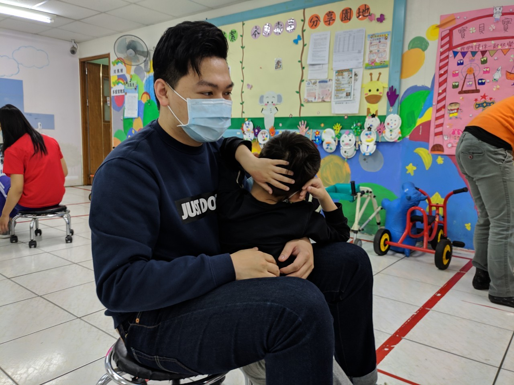
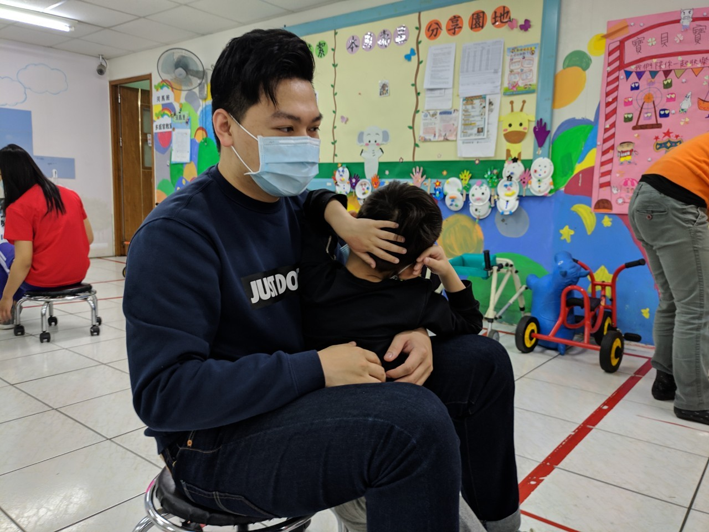

2020/03/24
傅昱翔
心得
這是第一次照顧小孩，而且還是身心障礙的小朋友，讓我有點不知所措， 這次的對象是河馬班。大多都待在推車上，並有器具去固定身體，而我負責一位少數能自己活動的小女孩， 但也只是隨意地在地上爬行，她的身體很輕，生怕不小心傷了她的身體，她似乎肌肉發展不健全， 還在做相關的訓練，訓練時間也不能太長，一方面給予她休息時間，一方面她也無法專注那麼長的時間， 這次幫忙了老師餵藥，幸好她很乖，不太抗拒，只是喝的有點慢，陪伴的過程，發現只有玩具、聲音能吸引他們注意， 更好的話是音樂，由於還在牙牙學語，難以理解他們想表達的意思，但老師卻經驗豐富， 一下子就能注意他們的狀況和需求，十分厲害。
戴睿廷
心得
這是第一次照顧小孩，
陳冠名
心得
這是第一次照顧小孩，
徐振捷
心得
這是第一次照顧小孩，
楊宗叡
心得
雖然照顧小孩非第一次，但不同的是這些小孩的年齡，較我之前的服務學習還要小，並且因為這些小朋友有身心障礙，讓我不得不得全心全力的去完成這項任務，我被分到大象班，大象班的小朋友算是蠻乖的，老師說的話大部分都聽得懂，只是口語的表達能力可能是他們需要加強的地方，老師上課時，小朋友常常會分心有寫小朋友可能也比較坐不住，常常喜歡跑來跑去的，整天下來也是非常耗體力的，平常老師一次要顧這麼多小朋友真的不簡單，會搶玩具，又會吵鬧，老師要扮演的角色實在太多了。